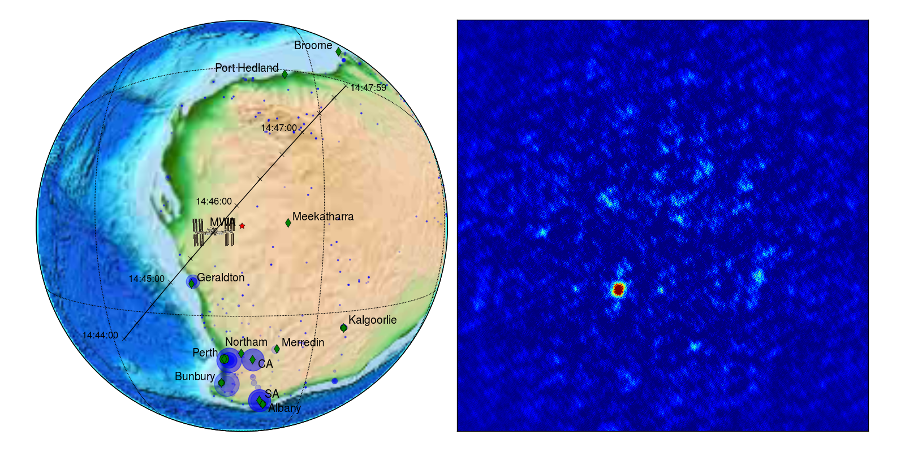

The International Space Station with the Murchison Widefield Array

Explanation:
On the left we see the path of the ISS as it flew over Australia on 19 May, 2013. The location of the MWA is the red star. Each of the blue circles/dots is a nearby FM radio transmitter, where the size of the circle reflects how strong the transmitter is.On the right is the image we made from the MWA data as the ISS flew overhead. Each image is from 0.5 seconds of data, and the full size of the image is about 60 degrees across. The radio waves are at a frequency of 98.3 MHz.
Download animations:
Links: